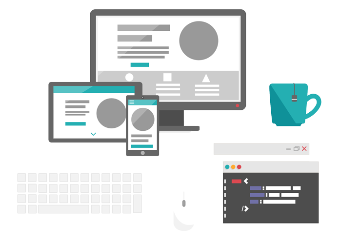

CREATING ENGAGING EXPERIENCES FOR WEB AND MOBILE
I'm Gian Johansen, a web developer and designer with a passion for delivering clean, beautiful code that solves real problems. I spend my time crafting simple, usable interactions that keep users coming back.

DEVELOPMENT
I develop using languages relevant to today's web, like HTML5 and jQuery, to produce high quality solutions within modern technologies like Django and Wordpress. My code brings your designs to life.

UI/UX DESIGN
I design, build and test user experiences that solve complex problems in the simplest manner possible. I enjoy finding ways to make my user's lives easier, and I believe solid design is a vital first step for that.
-

CAMPERDOWN PROGRAM ONLINE
Australian Stuttering Research Center An online component for the speech therapy program from the Australian Stuttering Research Centre. Built using Django with Bootstrap. -

STUDY DRONES
University of Sydney A note-sharing tool that allows Usyd students to share files and collaborate with one another. Built using Django with Bootstrap. -

KNOWLEDGE CAREER
Simplogy Pty Ltd Assists individuals with their continuing professional development through personalized learning paths. Built using Drupal. -

TOUCHSTONE
CSIRO A web-based implementation for the database benchmarking standard TPC-C. Built under CSIRO supervision using J2EE and the Play Framework.